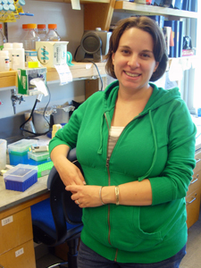

|
Daniel J. Lew, PhD
Professor of Pharmacology and Cancer Biology
Professor of Molecular Genetics and Microbiology
Director, Program in Cell and Molecular Biology
Box 3813
C359 LSRC bldg
Duke University Medical Center
Durham, NC 27710
Tel (919) 613-8627
Fax (919) 681-1005
Email daniel.lew@duke.edu
daniel.lew@duke.edu
|

|
Hsin Chen
Graduate Student
hc43@duke.edu
|

|
Audrey Howell, PhD
Post-Doctoral Fellow
audrey.howell@duke.edu
My work is focused on understanding how cells establish an axis of polarity. I
am using live-cell microscopy to follow the polarization of key proteins
involved in polarity establishment in a variety of genetic backgrounds.
|

|
Michelle Jin
Technician
michelle.jin@duke.edu
|

|
Jayme Johnson
Graduate Student
jmj5@duke.edu
I am interested in how yeast mate. Haploid yeast of opposite mating type grow projections (shmoos) towards each other during mating. In order to correctly orient their growth, the cells follow pheromone gradients in a process termed chemotropism. My work studies how cells follow the pheromone gradient accurately, and how they form shmoos. I use genetic and microscopic tools to investigate the role of individual proteins in these processes.
|
|

|
Kindra King
Graduate Student
kmk18.edu
Polarized growth in budding yeast is essential for forming new buds. This new bud must be formed before the end of mitosis so that the DNA can be partitioned into the two cell bodies. If there is a problem with the bud formation, the cell will arrest in G2 at the morphogenesis checkpoint. This checkpoint is dependent on the protein Swe1. But how does Swe1p know when there is a problem? My research tries to shed some light on this question. By causing transient depolarization in cells via stress (heat, salt, sugar, ethanol), I can use genetic and microscopy methods to examine how Swe1p regulators are involved in the morphogenesis checkpoint.
|
|
|
Wendy Lin
Undergraduate
wendy.lin@duke.edu
My research focuses on understanding how cells maintain an axis of polarity once it is established as a response to mating pheromone. To do this, I am using genetic techniques and microscopy to examine the behavior of proteins involved in the regulation of this process.
|
|
|
Natasha Savage
Post-Doctoral Fellow
NS115@notes.duke.edu
|

|
Chi-Fang Wu
Graduate Student
cw96@duke.edu
Polarity establishment involves amplification of a GTP-Cdc42p cluster via a positive feedback mechanism, which depends on the assembly of complexes containing a scaffold protein Bem1p, a GEF Cdc24p and a Cdc42p effector PAK. My work focuses on understanding the factors involved in the negative feedback loop that breaks down Bem1p-GEF-PAK complexes at the polarized site. I use time-lapse microscopy to follow the assembly/disassembly of the complexes in yeast cells with different genetic backgrounds.
|

|
Trevin Zyla
Technician
|